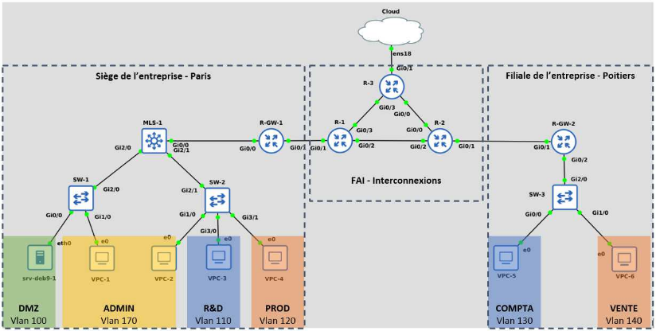

SAE 2.1 : Construction d'un Réseau Informatique Multisites
Mise en œuvre complète d'une infrastructure réseau étendu (WAN) pour interconnecter deux sites distants (Paris et Poitiers), incluant le routage dynamique OSPF, la segmentation VLAN, la translation d'adresses (NAT/PAT) et le déploiement de services applicatifs critiques (DNS, HTTP, SSH).

1. Le Défi de l'Interconnexion Multisites
L'objectif de cette SAE était de simuler l'interconnexion sécurisée de deux entités d'entreprise distantes via un réseau opérateur (FAI). Ce scénario requérait des solutions de routage robustes, une segmentation fine des utilisateurs, et l'exposition contrôlée des services vers Internet.
Objectifs Clés de l'Infrastructure
- Interconnexion multisites : Interconnecter les sites distants via un réseau FAI simulé.
- Segmentation (VLANs) : Segmenter logiquement les réseaux locaux (VLANs : ADMIN, R&D, PROD, COMPTA, VENTE).
- Services applicatifs : Déployer des services fondamentaux (DNS, HTTP, SSH).
- Sécurité périmétrique : Mettre en place des règles de sécurité (PAT, ACL) pour contrôler l'accès Internet.
2. La Solution Technique & Mise en Œuvre
L'infrastructure a été entièrement virtualisée via GNS3 et Proxmox, en utilisant des équipements Cisco (vIOS) pour le routage et la commutation multicouche (MLS-1, SW-1, etc.). La solution a été structurée en deux phases principales : l'infrastructure et les services.
Phase 1 : Routage et Accès Réseau
- Cisco IOS & Routage Inter-VLAN : Configuration du MLS-1 et des routeurs périphériques (R-GW-1, R-GW-2).
- OSPF : Déploiement du routage dynamique sur le réseau FAI pour assurer la connectivité entre les sites.
- NAT / PAT : Configuration de la translation d'adresses sur les routeurs de passerelle pour l'accès à Internet.
Phase 2 : Déploiement des Services & Sécurité
- Services Linux : Installation et configuration des serveurs DNS, HTTP (Apache/Nginx) et SSH sur les machines virtuelles (VM) Linux.
- ACLs : Mise en œuvre de Listes de Contrôle d'Accès pour sécuriser et filtrer les flux entre les différents VLANs et vers la DMZ.
3. Validation & Compétences Acquises
La validation finale a inclus une présentation orale et une démonstration des fonctionnalités, justifiant le plan d'adressage et le fonctionnement de chaque service installé.
Bénéfices Techniques Confirmés
- Interconnexion Validée : Les services DNS/HTTP/SSH sont accessibles entre les sites de Paris et Poitiers.
- Sécurité : Les règles NAT/PAT et les ACLs filtrent correctement les flux selon les politiques définies.
- Maîtrise OSPF : Capacité à configurer et dépanner un protocole de routage dynamique complexe.
Expertise Développée
J'ai acquis une expertise complète dans le cycle de vie d'un réseau étendu : de la planification (adressage) à l'exploitation (routage, services), en passant par la sécurité périmétrique (NAT/ACLs). La manipulation de GNS3 avec un serveur backend Proxmox a également consolidé mes compétences en virtualisation et en environnement de laboratoire.